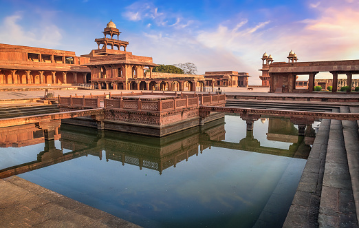

;
Fatepur-Sikri
The Taj Mahal
Agra Fort

The Taj Mahal, is an ivory-white marble mausoleum on the right bank of the river Yamuna in the Indian city of Agra. It was commissioned in 1632 by the Mughal emperor Shah Jahan to house the tomb of his favourite wife, Mumtaz Mahal; it also houses the tomb of Shah Jahan himself. The Taj Mahal was designated as a UNESCO World Heritage Site in 1983
Agra Fort is a historical fort in the city of Agra in India. It was the main residence of the emperors of the Mughal Dynasty until 1638, when the capital was shifted from Agra to Delhi. Before capture by the British, the last Indian rulers to have occupied it were the Marathas. In 1983, the Agra fort was life inscribed as a UNESCO World Heritage Site.[1] It is about 2.5 km northwest of its more famous sister monument, the Taj Mahal.
Fatehpur Sikri is a town in the Agra District of Uttar Pradesh, India. The city itself was founded as the capital of Mughal Empire in 1571 by Emperor Akbar, serving this role from 1571 to 1585, when Akbar abandoned it due to a campaign in Punjab and was later completely abandoned in 1610.[3] The name of the city is derived from the village called Sikri which occupied the spot before.